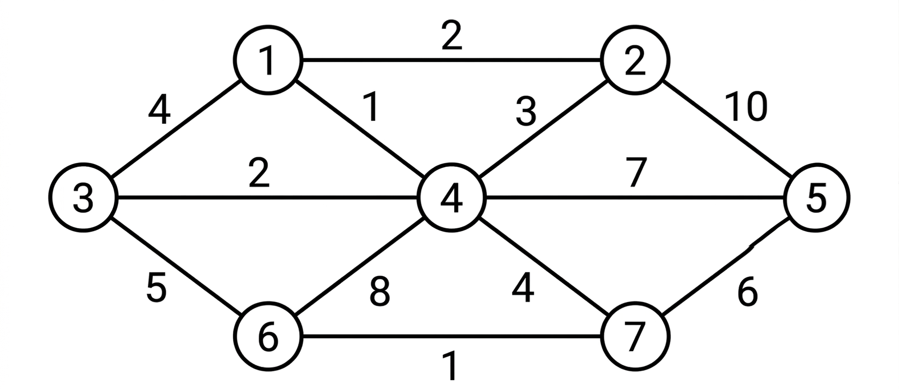
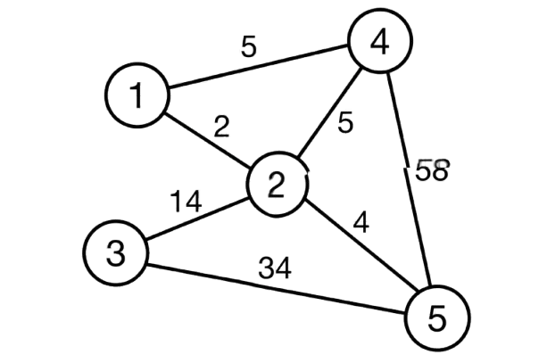
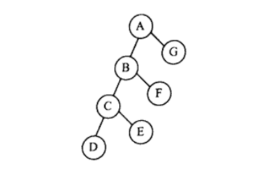

B.Tech. IV Semester
Examination, November 2023
Grading System (GS)
Max Marks: 70 | Time: 3 Hours
Note:
i) Attempt any five questions.
ii) All questions carry equal marks.
a) Define time complexity. Describe different notations used to represent time complexity. (Unit 1)
b) Discuss Strassen's matrix multiplication as well as classical $O(n^{2})$ one. Determine when Strassen's method outperforms the classical one. (Unit 1)
a) Explain partition exchange sort algorithm and trace this algorithm for $n=8$ elements: 24, 12, 35, 23, 45, 34, 20, 48. (Unit 1)
b) State the Job-Sequencing with deadlines problem. Find an optimal sequence to the $n=5$ Jobs where profits $(P_{1},P_{2},P_{3},P_{4},P_{5})=(20,15,10,5,1)$ and deadlines $(d_{1},d_{2},d_{3},d_{4},d_{5})=(2,2,1,3,3).$ (Unit 2)
a) A thief enters a house for robbing. Thief can carry a maximum weight of 6kg into his bag. There are 3 items in the house with weights $(w_{1},w_{2},w_{3})=(2,3,4)$ and profits $(p_{1},p_{2},p_{3})=(1,2,5)$ what items should thief can take will get the maximum profit? He either takes or leaves the item. (Unit 3)
b) Explain prim's and Kruskal's algorithm shown in figure with the following example.

(Unit 2)
a) Solve the following instance of $0/1$ Knapsack problem using Dynamic programming. $n=3$; $(W_{1}, W_{2}, W_{3}) = (3, 5, 7)$; $(P_{1},P_{2},P_{3})=(3,7,12)$; $M=4.$ (Unit 3)
b) Design a three stage system with device types $D_{1}$, $D_{2}$ and $D_{3}$. The costs are \$30, \$15 and \$20 respectively. The Cost of the system is to be no more than \$105. The reliability of each device is 0.9, 0.8 and 0.5 respectively. (Unit 3)
a) Discuss about Multistage graph problem. Also give a suitable algorithm and find its computing time. (Unit 3)
b) Write an algorithm to determine the Hamiltonian cycle in a given graph using backtracking. (Unit 4)
a) Solve the following instance of travelling sales person problem using Least Cost Branch Bound.

(Unit 4)
b) Construct state space tree for solving four queen's problem using backtracking. (Unit 4)
a) Explain the P, NP-Hard and NP-complete classes? Give the relation between them. (Unit 5)
b) Show the inorder, preorder and postorder for the following tree

(Unit 5)
Write short notes on any two of the following:
a) Data Transfer Optimization and Logic Optimization (Unit 1)
b) Differentiate between prim's algorithm and Kruskal's algorithm (Unit 2)
c) Parallel algorithms (Unit 5)
d) Approximation Algorithms (Unit 5)